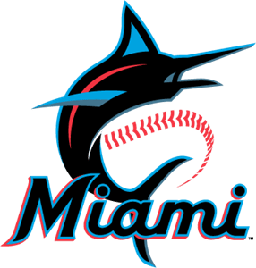

My Top Two Marlins Prospects
| Prospect Name |
Prospect Age |
Position |
Bats/Throws |
BAA |
OBP |
SLG |
OPS |
HR |
RBI |
BB |
SB |
| Agustin Ramirez |
22 |
C/1B |
R/R |
.268 |
.354 |
.466 |
.820 |
52 |
231 |
154 |
45 |
| Connor Norby |
24 |
2B/OF |
R/R |
.286 |
.368 |
.498 |
.866 |
69 |
241 |
181 |
45 |

Agustin Ramirez is a promising baseball prospect within the Miami Marlins organization, primarily recognized for his role as a catcher. After being traded from the New York Yankees, the Marlins hope to develop him into the star catcher that they desperately need. His strengths include:
Hitting Ability
Ramirez has demonstrated significant offensive prowess, leading Double-A in home runs early in the season. His ability to hit for power positions him as a key offensive contributor for his team.
Arm Strength
He possesses solid arm strength, which is a critical asset for a catcher, especially in terms of throwing out base runners. This strength has translated into impressive statistics, including 104 stolen bases in 132 attempts, showcasing his ability to control the running game despite a slower release time.
Defensive Skills
While he is still refining his defensive skills, Ramirez has shown marked improvement in receiving, blocking, and throwing. Scouts note that he is working on polishing these areas, which are essential for a catcher at higher levels of competition.
Overall Potential
With a combination of offensive talent and developing defensive skills, Agustin Ramirez is viewed as a player with considerable potential in the Marlins' future plans. His ability to improve and adapt will be crucial as he progresses through the minor leagues.

Connor Norby is a promising baseball prospect in the Miami Marlins organization. A few days prior to being traded to Miami, he hit his 2nd career home run in the majors against them, so Miami must be thrilled for his arrival. Here's a description of Norby and his key strengths:
Position and Physical Attributes
Norby primarily plays second base but has also seen time in the outfield, particularly left field. He stands at 5'10" and weighs 180 pounds, demonstrating a compact and athletic build.
Offensive Prowess
Norby's most notable strength is his hitting ability:
Power: He has shown significant power potential, hitting 69 home runs in his minor league career. His bat speed and strength suggest he can continue to hit home runs at higher levels.
Consistency: In 2023, Norby maintained a solid .290/.359/.483 slash line over a full Triple-A season, showcasing his ability to hit for both average and power.
Extra-Base Hits: He has a knack for extra-base hits, evidenced by his 40 doubles and 22 home runs in the 2023 season.
Versatility
While primarily a second baseman, Norby has shown versatility by playing in the outfield. In 2023, he made 102 starts at second base and 30 in the outfield, mostly in left field. This flexibility could increase his value and opportunities at the major league level.
Baserunning
Norby is described as an average runner who maximizes his speed through smart and aggressive baserunning. This intelligence on the basepaths adds another dimension to his offensive game.
Developmental Progress
Norby has shown consistent improvement and adaptability:
He rapidly progressed through the minor league system, reaching Triple-A in his first full season in 2022.
His walk rate improved as the 2023 season progressed, indicating an evolving approach at the plate.
Age and Potential
At 24 years old, Norby is considered young for the Triple-A level, suggesting he still has room for growth and development. His solid performance at this advanced level at a young age bodes well for his future potential.
Connor Norby's combination of hitting ability, power, versatility, and developmental trajectory make him an intriguing prospect. While the Marlins' deep farm system presents challenges for his path to the majors, Norby's skills could make him valuable either as a future contributor to the Marlins or as a potential trade asset.
© 2024
